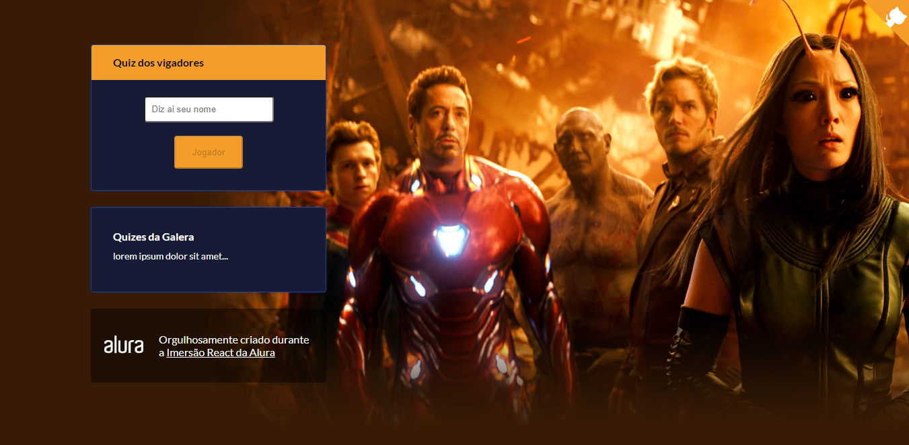

Casa Criativa
Site onde as pessoas podem cadastrar ideias de atividades durante o periodo de quarentena. Site criado na semana DevIniciante da Rocketseat.
Acessar repositorio: AQUIHappy
Criado durante a semana de imersão da Rocketseat, tem a possibilidade de cadastrar os orfanatos da sua cidade e ficar disponivel no mapa para as pessoas visitarem e contribuir.
Acessar repositorio: AQUI